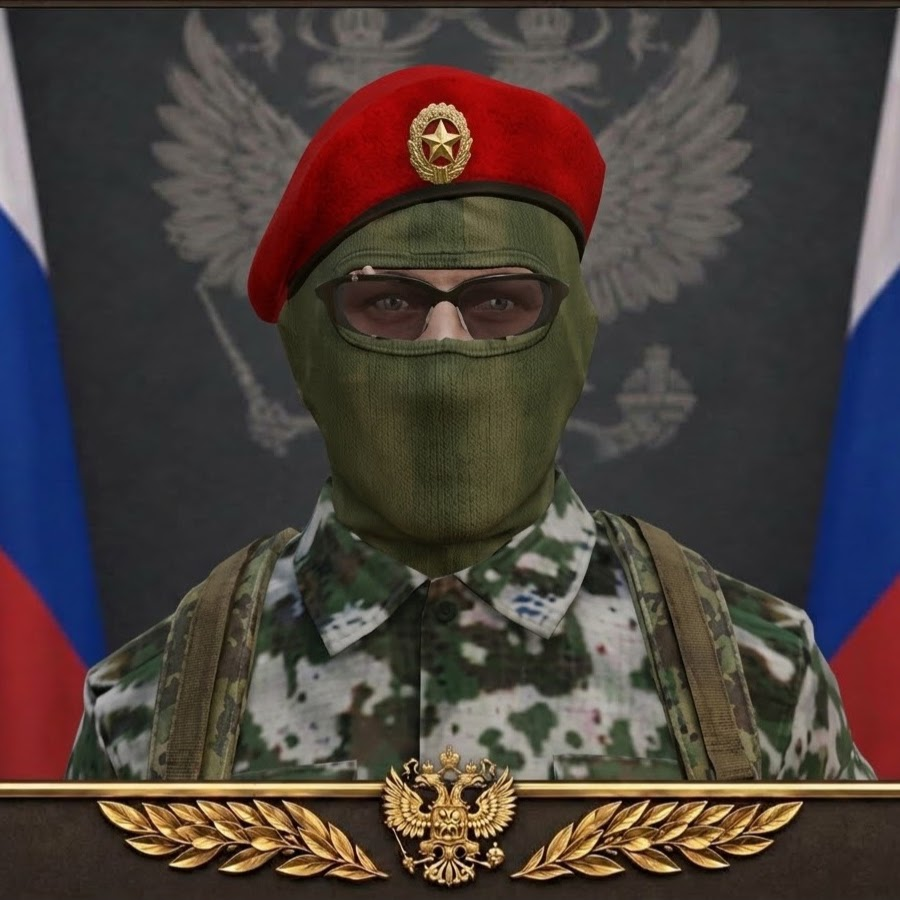

Руководство армии
Высший командный состав и руководители военных подразделений.
ГЕНЕРАЛ АРМИИ

Имя Фамилия
Главнокомандующий армией
Генерал-Полковник
Имя Фамилия
Осуществляет координацию деятельности армии и контролирует исполнение приказов генерала.
Генерал-Полковник
Имя Фамилия
Помогает главнокомандующему в управлении армией и организации служебной деятельности.
Генерал-Полковник
Имя Фамилия
Отвечают за личный состав, подготовку военнослужащих и выполнение задач подразделений.